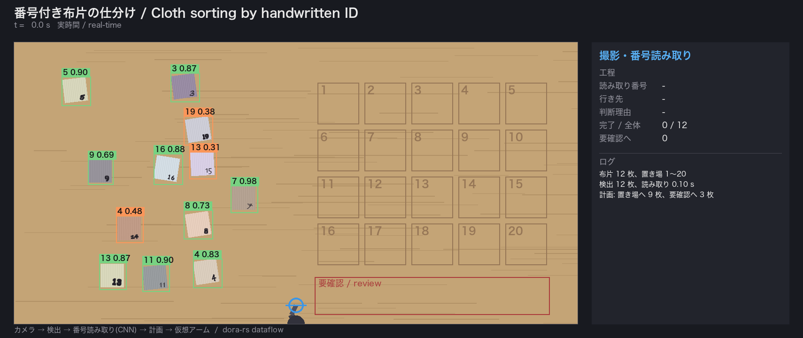
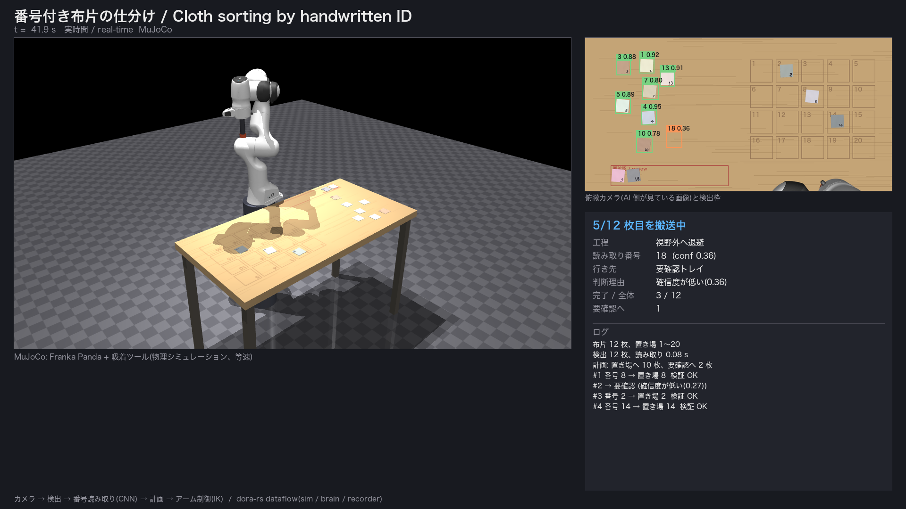
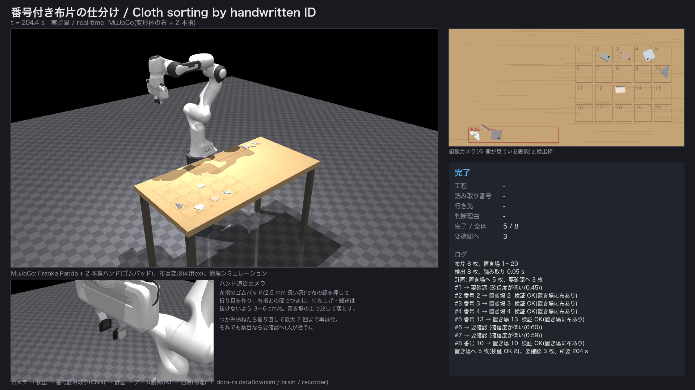
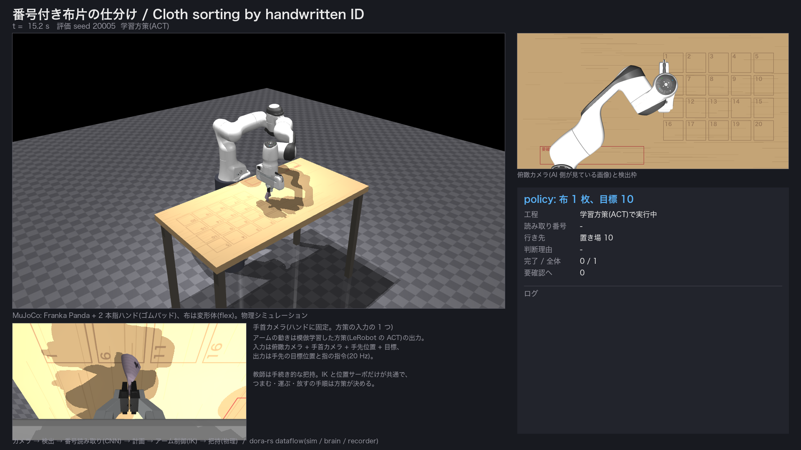

本課題はこの状況を抽象化し、「作業台に並んだ番号付きの布片を、ロボットが番号を読み取って、番号どおりの置き場へ運ぶ」タスクを設計・実装しました。
狙いは、講座で学んだ MLOps / RobOps・ロボットミドルウェア・OSS の考え方を 1 本のパイプラインとして通すことです。 AI の精度そのものより、読み間違えても止まらず、人が後で確認できる運用を設計しました。 ロボットは MuJoCo の物理シミュレーション上の Franka Panda で、布は変形体(flex)、把持はゴムパッド付きの 2 本指ハンドで物理に任せています。実機の接続は次の段階に残しています。
[段取り] 何も置いていない机を撮影(背景差分の基準) ↓ カメラ(俯瞰) → 布片検出(背景差分) → 番号読み取り(インク抽出 → 文字分割 → 1 文字 CNN) ↓ 読めない / 確信度が低い → 要確認トレイ 計画(番号 → 置き場、近い順に並べる) ↓ Panda の pick & place(状態機械: 接近 → 降下 → つまむ(1.5 s) → ゆっくり持ち上げ → ゆっくり搬送 → 降下 → 放して落とす → 退避 → 視野外へ) 目標位置・向きから IK で関節角を解き、位置サーボ(重力補償つき)で追従。つかみ損ねは撮り直して最大 2 回再試行 ↓ アームが視野外へ下がってから撮り直し、置き場の領域に布があるかを確かめる(自己検証) → JSONL に記録
| 要素 | 実装 | 講座との対応 |
|---|---|---|
| ミドルウェア | dora-rs 1.0。sim(ロボット側)/brain(AI 側)/recorder の 3 ノードを Arrow メッセージでつなぐ | ロボットミドルウェア: ノード間通信と dataflow の定義 |
| AI(推論) | 自前学習した 1 文字 CNN(約 47 万パラメータ、CPU 推論 0.1 秒 / 12 枚)。既定の構成で学習しているのはこの番号読み取りで、検出・計画はルール(背景差分、しきい値、貪欲法)。把持の手順・アーム制御は、手続き的な版(状態機械 + IK)と、それを教師に模倣学習した方策(LeRobot の ACT、4.4 節)を切り替えられる | 必須要件「何らかの形で AI を使用」 |
| AI(学習) | 手書き風フォント 8 種で合成 → 学習 → 別の 3 種で評価 → 重みと指標を保存 | MLOps: データ収集 → 学習 → 検証のサイクル。sim2real のドメインランダマイゼーション |
| 評価・CI | 方策は学習に使っていない固定シードの 20 場面で成功数を測り、教師と同じ場面で比べる。デモとモデルは Hugging Face Hub に置く。pytest を GitHub Actions で push ごとに実行 | MLOps: loss ではなくシミュレータでの成功率で評価する、データセットを版で管理する、CI |
| 検出 | 段取り時の背景画像との差分 + 連結成分(深層学習なし) | 使い分け: 学習が要らない部分には使わない |
| 計画・運用 | 確信度しきい値で要確認トレイへ逃がす、置いた後にカメラで照合、JSONL 記録 | RobOps: 止めない・記録する・あとで直す |
| シミュレータ | MuJoCo 3(Apache-2.0)。作業台・重力・接触を物理計算。布は flex(2D シェル、9×9 格子、厚さ 3 mm、ヤング率 1e5 のフェルト程度)。俯瞰カメラは 1 px = 1 mm になる画角で描画 | 実機の前に安全に試す場としてのシミュレータ |
| ロボット | mujoco_menagerie の Franka Panda(Apache-2.0)の腕 + ハンドに、ゴムパッド(摩擦 2.0、左指は 2.5 mm 長い唇)を足した。RobotArm インターフェースの実装 GripperArm(IK + 位置サーボ、速度制限、閉じる・放す・再試行)。剛体 + 吸着版 MujocoArm と 2D 版 VirtualArm も残してある | 実機化はこの 1 クラスの差し替え。2D → 剛体 + 吸着 → 変形体 + 2 本指の載せ替えも同じ手順で済んだ |
| カメラ | AI が使うのは机の真上の俯瞰カメラ 1 台だけ。動画の左下の手首カメラ(2 本指版)は可視化用で、推論には使っていない(なお動画の録画時点ではハンドに追従する仮想カメラだった。コードは手首固定のカメラに改めた) | 実機なら俯瞰 + 手首(eye-in-hand)の構成。手首カメラで把持の成否を見るのが次の一手 |
| 把持 | 物理任せ。平らな布を平行グリッパでつまむため、唇を机面まで押し込んで布の縁を押し、閉じる間はハンド全体を動かして押さえ側の指を世界に対して止める(折り目が押さえ指の前で立って 2 枚重ねでつままれる)。持ち上げ 3 cm/s、搬送 6 cm/s | 把持の成否はパラメータではなく接触の物理が決める |
sim/synth.py)。学習と運用の前処理がずれない。pipeline.py(決定的・テスト用)と dora ノード(分散)から呼ぶ。テストは 27 件を pytest で自動化し、GitHub Actions で push ごとに実行する(MuJoCo の物理・IK・布のつまみ上げも描画なしで検証)。| 項目 | 値 |
|---|---|
| 学習データ | 8,800 枚(11 クラス × 800、合成 9.7 秒) |
| 学習時間 | 255 秒(CPU、20 エポック) |
| 学習フォントでの精度(検証) | 100.0% |
| 未見フォント 3 種での精度 | 84.6%(文字単位)。「6」58%・「3」60%・「2」71% が弱く、「0」「5」「-」はほぼ 100% |
未見の筆跡では 2 桁の番号で 7 割程度しか正しく読めない計算になります。だからこそ、下流の「確信度で逃がす」「置いた後に照合する」が効きます。
| 項目 | 単一プロセス(動画) | dora 分散実行 |
|---|---|---|
| 検出 | 8 / 8 | 8 / 8 |
| 番号を正しく読めた | 7 / 8 | 7 / 8 |
| 置き場へ配置(置き場に布があることを検証) | 5(5) | 1(1) |
| 要確認トレイへ(読み違い 1、正しいが低確信度 2) | 3 | 3 |
| つかみ損ね → 再試行で回復 | 4 回(4 枚) | 2 回 |
| 搬送中に落として失敗(人が拾う) | 0 | 4 |
| 誤った置き場に置いた | 0 | 0 |
| 所要(シミュレーション時間) | 204 秒 | 約 190 秒 |
読み違えた 1 枚(「16」→「15」、確信度 0.45)はしきい値を下回って要確認トレイへ回り、誤配置はゼロです。 把持は物理任せなので成否が揺れます。単一プロセス版は 8 枚中 4 枚でつかみ損ねましたが、撮り直して再試行し全部回収しました。 同じ seed・同じコードの dora 版は、搬送中に 4 枚を落としました(物理の微小な差で結果が変わる。実機でも同じことが起きる)。 落とした布は「搬送中に落下」として要確認に回し、止まらずに次へ進みます。



4.2 節までのアームは、つまむ位置・閉じ方・速度を手で決めた状態機械でした。この手続きを教師にして、
「目標(つまむ点と置く点)が与えられてから、つまんで運んで放すまで」の手先の動きを LeRobot の ACT に模倣学習させ、
--arm policy で差し替えられるようにしました。上位(検出・読み取り・計画・検証)と下位(IK + 位置サーボ)はそのままです。
| 項目 | 内容 |
|---|---|
| 観測 | 俯瞰カメラ 256×128、手首カメラ 256×128、状態 8 次元(手先 xyz、指の開き、目標のつまむ点 xy と置く点 xy) |
| 行動 | 手先の目標位置 xyz + 指の指令(0 閉〜1 開)、20 Hz。100 ステップぶんを一度に予測し時間方向に平均(temporal ensembling) |
| 教師データ | 手続き的な把持で 154 エピソード収集(布 1〜3 枚の場面、8 並列で約 1 時間)、成功した 123 エピソード・51,131 フレームを LeRobot データセット v3 形式で保存 |
| 学習 | ACT 既定構成(ResNet18 ×2 + Transformer、52M パラメータ、VAE あり)、20,000 ステップ、batch 16、M1 Pro の MPS で約 1 時間 45 分 |
| 学習に使っていない 20 場面(seed 20000〜20019、同じ場面で両者を実行) | 学習した方策(ACT) | 教師(手続き的な把持) |
|---|---|---|
| 目標の ±50 mm に置けた | 14 / 20 | 12 / 20 |
| 両方成功 / 方策だけ / 教師だけ / 両方失敗 | 9 / 5 / 3 / 3 | |
| 1 枚あたりの所要(シミュレーション時間の平均) | 23.6 秒 | 19.3 秒 |
| 学習の途中経過(同じ 8 場面での成功数) | 5,000 ステップ 2/8 → 10,000 で 3/8 → 15,000 で 4/8 → 20,000 で 5/8(教師は 5/8) | |
方策の失敗は「つまめずに空で運ぶ」と「置く位置が目標から 5〜6 cm ずれる」の 2 種類、教師の失敗は搬送中の落下が主でした。
方策が 2 本上回っていますが、把持の成否は物理の微小な差で揺れるので、20 場面の差で「方策が教師より上手い」とは言えません。
図4 は方策が置けて教師が落とした場面です。
4.2 節と同じ場面(seed 4、8 枚)を、検出・読み取り・計画・検証はそのままにアームだけ方策に替えて回すと、置き場へ 6 枚(検証 OK 6)、誤配置 0、失敗 2、202 秒でした。
失敗した 2 枚はどちらも要確認トレイ行きで、トレイはロボット側の机の縁にあり学習データの 15% しか無かった行き先です(runs/cloth8_act/)。

14/20 だった方策の失敗を原因ごとに調べ、順に手を打ちました。(1) つかみ損ねは撮り直して最大 2 回やり直す、(2) 開いても布がパッドに引っかかって宙に残る失敗(教師にもある)は横に 3 cm 振って落とす、 (3) ACT の temporal ensembling(毎周期の平均)は絶対位置の指令を平均するせいで手先が 1〜2 mm/周期しか進まない「這う」状態に入り長い搬送で時間切れになるため、100 ステップ(5 秒)の予測をそのまま実行する開ループに変更、 (4) 指の指令が中途半端でも布が指から離れて置く点の近くに載ったら終わりとみなす、(5) 教師は目標の ±3 mm に落とすのに方策は進行方向に 22 mm 止まり遅れるので、評価とは別の 20 場面で測った量だけ置く点を手前にずらす(キャリブレーション)。 この実行器で v1 の方策は評価 20 場面 19/20、較正用 20 場面 20/20 になりました。
方策そのものも変えました。要確認トレイ行きを 30% にしてデモを 400 本に増やし状態に「目標 − 手先」を足した run 2(326 本)、接近・搬送中に 1 cm の外乱を入れて集めたデモ(DART 方式、126 本)を足した run 3(452 本)です。 同じ実行器で、v1 / v2 / v3 はそれぞれ 40 場面中 39 / 38 / 38 で差がなく、残る失敗はどれも目標から 5 cm 強の惜しい外れでした。教師の設定(接触数のしきい値、搬送速度、持ち上げ後の待ち)を変える比較は 16 場面で差がありませんでした。公開データで事前学習された VLA(SmolVLA、450M)を同じデモで微調整する試み(4,000 ステップ、約 3 時間)は 40 場面で 4 成功に留まり、この学習量では ACT に届きませんでした。 8 枚の仕分け全体(seed 4)を改善後の実行器で回すと 7/8(置き場 5、要確認 2、失敗 1)です。
落とす置き方では布は折れて裏返り、番号を読み直せません。教師に「敷く」動作(布の下端が机に触れる高さから進みながら降り、手の後ろに順に敷く)を足し、 平ら・広がり・表向き・番号の読み直しで評価しました。同じ 20 場面で、敷く教師は置けた 14・きれい 10・読み直し 5、敷く教師から学んだ方策は 8・3・1 でした(落とす方策は 19・0・0)。 置けたものは全部表向きで平らに近く、敷く動きは真似できていますが、mm 単位の高さ合わせが要るぶん置ける率が下がりました。番号の読み直しが少ないのは、つまんだ角に番号があると折れ込んで隠れるためです。
方策が学んだのは「与えられた目標へ、教師と同じ手順で動く」ことで、どの布をどこへ運ぶかは上位のルールが決めたままです。 教師が手続きなので、模倣学習の上限は教師の成功率です。公開されている布操作の実機データ(ALOHA のタオルたたみ、Unitree H1 の衣類たたみ、 SO-101 のタオルたたみなど)はロボットもカメラも違うため直接の学習データにはならず、使うならそれらで事前学習された VLA を土台に本データで微調整する形になります。
課題に取り組んでいる途中の 2026 年 10 月に、UC Berkeley と NVIDIA が RoboSimStudio(Apache-2.0。物理は NVIDIA の Newton、布は VBD)を公開しました。
布の物理を MuJoCo flex より細かく扱えるので、本体と同じ「5 cm 角の布を Panda の 2 本指でつまみ、3 cm/s で 3 cm 持ち上げ、6 cm/s で 15 cm 運んで放す」を、布を指に固定せず摩擦だけで持たせて動かしました。
GPU が要るため、Google Colab の T4 を Colab CLI から借りました(experiments/robosimstudio/)。
| 布(曲げの硬さ) | 成功(目標 ±50 mm) | 置いた位置のずれ | 置いた後の面積(元を 1) |
|---|---|---|---|
| やや柔らかい(0.5) | 10 / 10 | 6〜28 mm | ほぼ 1.0(平らなまま) |
| 柔らかい(0.05) | 5 / 5 | 25〜40 mm | 0.53〜0.69(折れて着地) |
柔らかい布は指から垂れて運ばれ、置くと折れ曲がって着地しました(動画の終盤に 2 倍速で入れた場面)。 本体の手続き的な把持は 20 場面中 12 回で、主な失敗は搬送中の落下でした。この条件では Newton の布のほうが指から抜けにくい結果です。ただ布の作り方(本体は 9×9 格子のフェルト、こちらは 11×11 の膜)や摩擦が違うので、成功率はそのまま比べられません。
動かすまでに 4 か所で詰まりました。CPU では布が別の計算(SuperDex)に切り替わり、公式のタオルのテストでも摘めない。Panda の指は厚みのある板として作った布をすり抜け、膜にすると当たる。腕が目標の 3〜4 mm 手前で止まるので、指先の高さを測って机まで追い込む必要がある。 膜の既定の曲げ減衰では、空気抵抗の無い世界で布が風に吹かれたように揺れ続けたため、公式デモと同じ値に上げた。本体を Newton に載せ替えるところまではしていません。
2 分 52 秒。冒頭はロボットが布を運ぶ映像にタイトルを重ね、続けて「ロボットがやること」「AI は 2 か所で使った」の 2 枚で要点だけを示します。中盤が MuJoCo の実行で、場面ごとに何が起きているかを字幕で出しています。終盤は RoboSimStudio と MuJoCo の左右比較(4.7 節)、最後に結果と学びです。 中盤の実行は、アームを学習した方策(ACT)で動かした仕分けの録画です(seed 4、8 枚。改善後の実行器。4.5 節の 7/8 の回。単一プロセス版で、同じ部品は dora の 3 ノードでも動く)。 実行部分は 2 倍速で、画面右上とスライドに明記しています(布が抜けないよう持ち上げ 3 cm/s・搬送 6 cm/s で動かすため、等速だと 8 枚で約 4 分かかります)。 実行部分は左が 3D 視点、左下が手首カメラ(方策の入力の 1 つ)、右上が俯瞰カメラと検出枠、右下が状態パネルで、各工程の判断理由を出しています。 録画のログ欄の最終行は「検証 OK」の数え方に誤り(要確認トレイに置いた分も数えていた)があったため、動画では正しい値(置き場 5 枚、検証 OK 5)に差し替え、コードも直しました。
RobotArm(move_to / grip / release)を SO-101 や OpenArm 向けに実装すれば差し替えられ、上位はそのまま。LeRobot のドライバを使う想定。MuJoCo 版の MujocoArm がその実装例。--backend mujoco)は読み直し検証ができる代わりに「つかめるか」を検証していない。RobotArm の境界がそのまま効き、AI 側と dora の構成は一切変えずに済んだ。uv venv .venv --python 3.12 && uv pip install --python .venv/bin/python -r requirements.txt export PYTHONPATH=$PWD .venv/bin/python -m cloth_sort.ml.train --out models # 学習(約 5 分) .venv/bin/python -m cloth_sort.pipeline --backend mujoco --seed 4 --n 12 --out runs/mj4 --video ./run_dora.sh # dora 分散実行(MuJoCo 版) .venv/bin/python -m pytest -q # テスト(描画なし) # 模倣学習(別 venv。詳細は README「学習した方策でアームを動かす」) uv venv .venv-il --python 3.12 && uv pip install --python .venv-il/bin/python -r requirements-learning.txt .venv-il/bin/python -m cloth_sort.learning.collect --episodes 160 --workers 8 # デモ収集(8 並列で約 1 時間) .venv-il/bin/python -m cloth_sort.learning.collect --pack data/staging --out data/cloth_pickplace .venv-il/bin/python -m cloth_sort.learning.train --dataset $PWD/data/cloth_pickplace --out $PWD/runs/train/act .venv-il/bin/python -m cloth_sort.learning.evaluate --policy runs/train/act/checkpoints/020000/pretrained_model --episodes 20
使用 OSS: MuJoCo 3(Apache-2.0)、mujoco_menagerie の Franka Panda モデル(Apache-2.0)、dora-rs(Apache-2.0)、LeRobot(Apache-2.0)、PyTorch(BSD-3)、NumPy、Pillow、Apache Arrow、ffmpeg、RoboSimStudio と Newton(Apache-2.0、4.7 節の実験のみ)。コードは Apache-2.0 で GitHub に公開(リポジトリ URL は Omnicampus の提出欄に記載)。